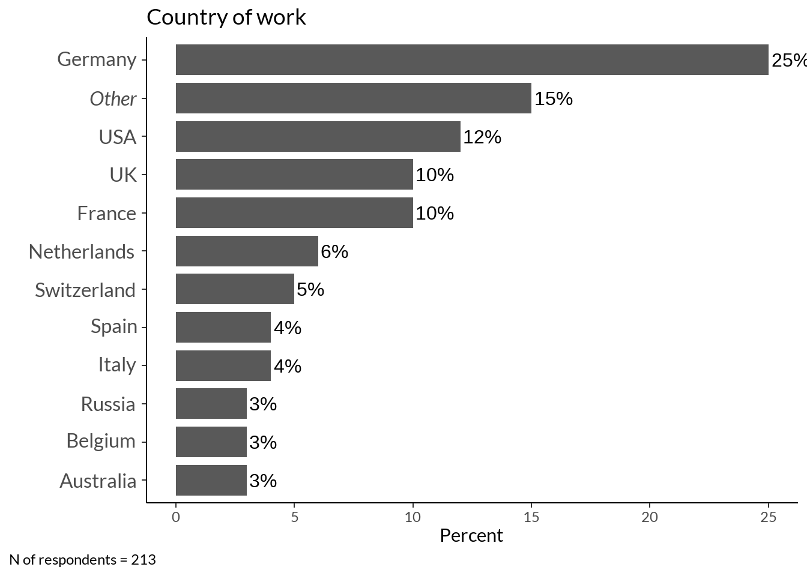
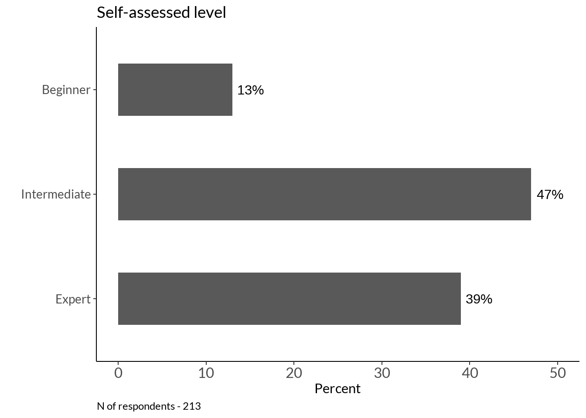
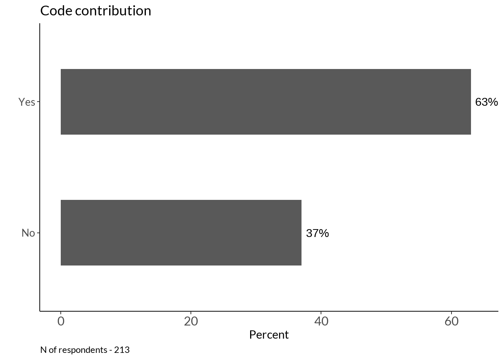
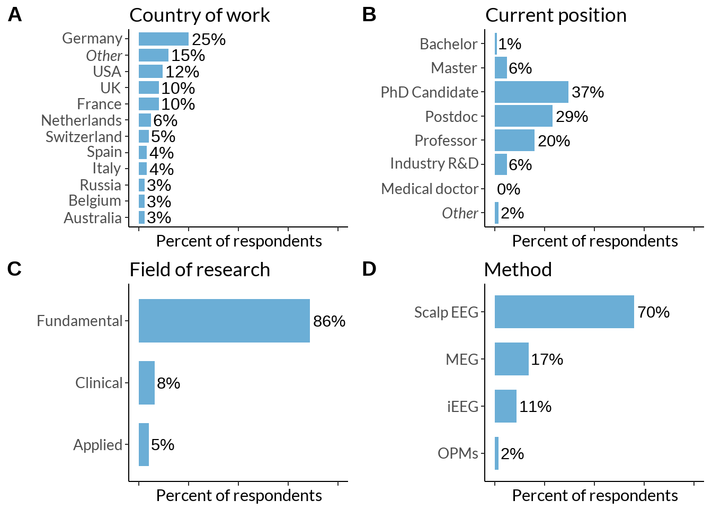
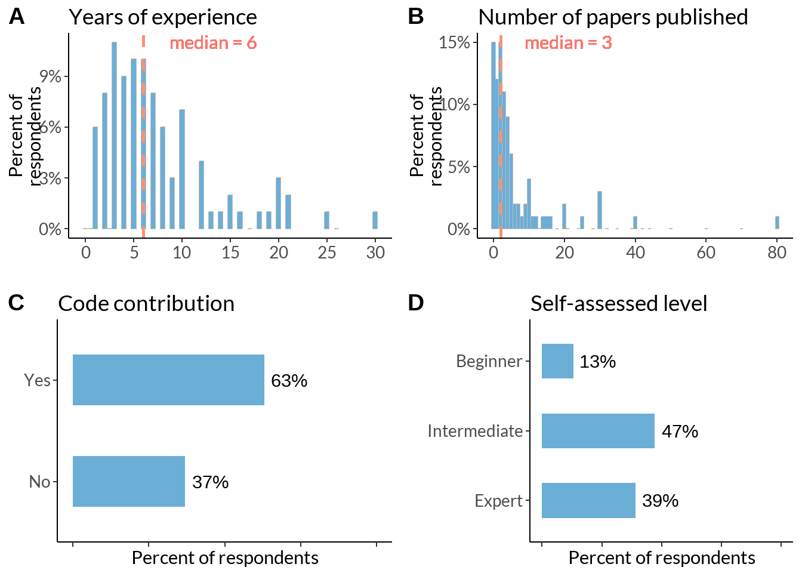

Code
data <- read_excel("data/results_survey.xlsx")
data <- data[1:121] %>%
filter(.[[18]] !='Yes') # not analysed any EEG method
font_add_google("Lato")
showtext_opts(dpi = 200)
showtext_auto(enable = TRUE)Here we show a statistics about our study sample: biographical and experience data
data <- read_excel("data/results_survey.xlsx")
data <- data[1:121] %>%
filter(.[[18]] !='Yes') # not analysed any EEG method
font_add_google("Lato")
showtext_opts(dpi = 200)
showtext_auto(enable = TRUE)country <- data.frame(table(data[8])) %>% dplyr::rename(country_work = !!names(.)[1]) %>%
mutate(country_work = ifelse(Freq >= 6, as.character(country_work), "Other")) %>% group_by(country_work) %>%
mutate(country_work = case_when(
country_work == "United Kingdom" ~ "UK",
TRUE ~ as.character(country_work)
)) %>%
dplyr::summarise(Freq = sum(Freq)) %>%
dplyr::mutate(percent_score = round(Freq / sum(Freq) * 100)) %>%
mutate(country_work = factor(country_work, levels = country_work[rev(order(percent_score))]))
italised1 <- rev(c("Germany", expression(italic("Other")), "USA", "UK", "France", "Netherlands", "Switzerland", "Spain", "Italy", "Russia", "Belgium", "Australia"))
country_fig <- country %>%
ggplot(data = ., aes(y = reorder(country_work, percent_score), x= percent_score)) +#, fill = country_work)) +
geom_col(stat = "identity", width = 0.8) +
labs(x = "Percent", y="", title = "Country of work") +
geom_text(aes(label = paste0(percent_score, "%")), hjust = -0.1,
size = 4) + theme_classic() +
theme(legend.position="none",
plot.caption.position = "plot",
plot.caption = element_text(hjust=0),
axis.text.y = element_text(size = 12),
text = element_text(family = "Lato"),
) + coord_cartesian(clip = "off") +
scale_y_discrete(labels = italised1)
country_fig +
labs(caption = sprintf("N of respondents = %d", sum(country$Freq))) 
data.frame(table(data[8])) %>% dplyr::rename(country_work = !!names(.)[1]) %>%
#mutate(country_work = ifelse(Freq >= 6, as.character(country_work), "Others")) %>%
group_by(country_work) %>%
mutate(country_work = case_when(
country_work == "United Kingdom" ~ "UK",
TRUE ~ as.character(country_work)
)) %>%
dplyr::summarise(Freq = sum(Freq)) %>%
dplyr::mutate(percent_score = round(Freq / sum(Freq) * 100)) %>%
mutate(country_work = factor(country_work, levels = country_work[rev(order(percent_score))])) %>%
arrange(desc(Freq))# A tibble: 30 × 3
country_work Freq percent_score
<fct> <int> <dbl>
1 Germany 53 25
2 USA 26 12
3 France 22 10
4 UK 22 10
5 Netherlands 12 6
6 Switzerland 10 5
7 Spain 9 4
8 Italy 8 4
9 Russia 7 3
10 Australia 6 3
# ℹ 20 more rowslibrary(countrycode)
c_df <- data.frame(table(data[8])) %>% dplyr::rename(country_work = !!names(.)[1])
c_df$continent <- countrycode(sourcevar = c_df[, "country_work"],
origin = "country.name",
destination = "region23")
c_df %>% group_by(continent) %>% dplyr::summarise(Freq = sum(Freq)) %>% ungroup() %>%
mutate(Per = round(Freq/ sum(Freq), 2) * 100) %>%
arrange(desc(Freq))# A tibble: 14 × 3
continent Freq Per
<chr> <int> <dbl>
1 Western Europe 105 49
2 Northern Europe 30 14
3 Northern America 28 13
4 Southern Europe 17 8
5 Eastern Europe 11 5
6 Australia and New Zealand 6 3
7 Western Asia 5 2
8 Southern Asia 3 1
9 South America 2 1
10 South-Eastern Asia 2 1
11 Central America 1 0
12 Central Asia 1 0
13 Eastern Asia 1 0
14 Western Africa 1 0field <- as.data.frame(table(data[9])) %>% arrange(desc(Freq)) %>% head(3)
field$Freq[1] <- field$Freq[1] + 1 # from Others
field$Freq[2] <- field$Freq[2] + 1
field$Freq[3] <- field$Freq[3] + 1
fieldplot <- field %>% dplyr::rename(area = !!names(.)[1]) %>%
mutate(percent_score = round(Freq / sum(Freq) * 100)) %>%
ggplot(data = ., aes(y = reorder(area, percent_score), x = percent_score)) +
geom_col(stat="identity", width = 0.7) + labs(y = "", title="Field of research", x ="Percent") +
geom_text(aes(label = paste0(percent_score, "%")), hjust = -0.1) +
theme_classic() +
theme(legend.position="none",
plot.caption = element_text(hjust=0),
text = element_text(family = "Lato"),
axis.text.y = element_text(size = 12)) + scale_y_discrete(labels=c("Applied", "Clinical", "Fundamental")) +
coord_cartesian(clip = "off") #+ scale_fill_grey(start = .9, end = 0)
fieldplot +
labs(caption = sprintf("N of respondents = %d", sum(field$Freq)))
#na.omit(data[13]) # recode Others
pos <- data[c(12, 13)] %>% dplyr::rename(position = !!names(.)[1], other = !!names(.)[2]) %>%
mutate(position = case_when(
position == "Industry senior researcher" ~ "Industry R&D",
position == "Doctoral researcher" ~ "PhD Candidate",
position == "Postdoctoral researcher" ~ "Postdoc",
position == "Bachelor student" ~ "Bachelor",
position == "Master student" ~ "Master",
TRUE ~ as.character(position))) %>%
mutate(other = tolower(other)) %>%
mutate(position = case_when(
grepl("\\b(master)\\b", other) == TRUE ~ "Master",
grepl("\\b(engineer|tech)\\b", other) == TRUE ~ "Industry R&D",
TRUE ~ as.character(position)
)) %>% dplyr::select(position) %>% na.omit(.) %>% table() %>% as.data.frame() %>%
mutate(position = factor(position, levels = rev(c('Bachelor', 'Master', 'PhD Candidate', 'Postdoc', 'Professor', 'Industry R&D', 'Medical doctor', 'Other')))) %>% mutate(percent_score = round(Freq / sum(Freq) * 100))
italised2 <- rev(c('Bachelor', 'Master', 'PhD Candidate', 'Postdoc', 'Professor', 'Industry R&D', 'Medical doctor', expression(italic('Other'))))
position <- pos %>%
ggplot(data = ., aes(y = position, x= percent_score))+
geom_col(stat="identity") + labs(title = "Current position", x = "Percent", y="") +
geom_text(aes(label = paste0(percent_score, "%")), hjust = -0.1) +
theme_classic() +
theme(legend.position="none",
text = element_text(family = "Lato"),
plot.caption.position = "plot",
plot.caption = element_text(hjust=0),
axis.text = element_text(size = 10)) +
coord_cartesian(clip = "off") #+ scale_fill_grey(start = .9, end = 0) +
scale_y_discrete(labels = italised2)<ggproto object: Class ScaleDiscretePosition, ScaleDiscrete, Scale, gg>
aesthetics: y ymin ymax yend
axis_order: function
break_info: function
break_positions: function
breaks: waiver
call: call
clone: function
dimension: function
drop: TRUE
expand: waiver
get_breaks: function
get_breaks_minor: function
get_labels: function
get_limits: function
guide: waiver
is_discrete: function
is_empty: function
labels: expression
limits: NULL
make_sec_title: function
make_title: function
map: function
map_df: function
n.breaks.cache: NULL
na.translate: TRUE
na.value: NA
name: waiver
palette: function
palette.cache: NULL
position: left
range: environment
range_c: environment
rescale: function
reset: function
scale_name: position_d
train: function
train_df: function
transform: function
transform_df: function
super: <ggproto object: Class ScaleDiscretePosition, ScaleDiscrete, Scale, gg>position +
labs(caption = sprintf("N of respondents - %d", sum(pos$Freq)))method <- data[14:17]
colnames(method) <- names(method) %>% str_split_i(., "\\? \\[", 2) %>% str_sub(., 1, -2)
methods <- data.frame(rowSums(t(data.frame(foreach(i = colnames(method)) %do% ifelse(method[i]=="Yes", 1, 0))))) %>%
tibble::rownames_to_column(., "plots") %>%
dplyr::rename(method = !!names(.)[1], sum_scores = !!names(.)[2]) %>%
mutate(percent_score = round(sum_scores / sum(sum_scores) * 100)) %>%
ggplot(., aes(y = reorder(method, percent_score), x = percent_score)) +
geom_col(stat = "identity", width = 0.7) + labs(y = "", x = "Percent", title = "Method") +
geom_text(aes(label = paste0(percent_score, "%")), hjust = -0.1)+
theme_classic() +
theme(legend.position="none", text = element_text(family = "Lato"), plot.caption = element_text(hjust=0), axis.text.y = element_text(size = 14)) +
scale_y_discrete(labels=c("OPMs MEG", "Intracranial EEG", "SQUID MEG", "Scalp EEG")) +
coord_cartesian(clip = "off") + xlim(0, 75) #+ scale_fill_grey(start = .9, end = 0)
methods +
labs(caption = sprintf("N of respondents = %d", nrow(method)))
t <- foreach(i = 1:nrow(data)) %do% tokenize_words(as.character(data[i, 11]))
tt <- foreach(i = 1:length(t)) %do% paste(unlist(t[i]), collapse = ' ')
area <- data.frame(matrix(tt)) %>% dplyr::rename(words = !!names(.)[1]) %>%
mutate(words2 = case_when(
grepl("\\bmemory\\b", words) == TRUE ~ "memory",
grepl("\\b(empathy|emot\\w*|affective|social)\\b", words) == TRUE ~ "affective neuroscience",
grepl("\\b(cognitive load|selective attention|attention|cognition|consciousness|meditation|cognitive control|self|executive functions)\\b", words) == TRUE ~ "cognitive control and attention",
grepl("\\b(hearing|audi\\w*)\\b", words) == TRUE ~ "auditory",
grepl("\\b(decision|reward)\\b", words) == TRUE ~ "decision making",
grepl("\\b(ageing|aging)\\b", words) == TRUE ~ "ageing",
grepl('\\bolfac\\w*', words) ~ 'olfaction',
grepl('\\b(communication|language|speech|biling\\w*|english)\\b', words) ~ 'language and speech',
grepl('\\bbci\\b', words) ~ 'bci',
grepl('\\bsleep\\b', words) ~ 'sleep',
grepl('\\b(timing|time|temporal)\\b', words) ~ 'time',
grepl('\\bperception\\b', words) ~ 'perception',
grepl('\\bvis\\w*', words) ~ 'vision',
grepl('\\b(development\\w*|ageing)\\b', words) ~ 'development',
grepl('\\b(spatial|brain body|motor|motion)\\b', words) ~ 'motor control',
grepl('\\b(diagnostics|disorder(s)?|psychiatry|epilepsy|autism|patients|therapy|psychopharmacology|pain|dbs|stimulation)\\b', words) ~ 'mental disorders',
grepl('\\b(signal|potentials|method\\w*|sdf|ieeg|computational)\\b', words) ~ 'methodology',
grepl('\\b(olfaction|vision|auditory)\\b', words) ~ 'development',
))
area %>% group_by(words2) %>% dplyr::summarise(Freq = n()) %>%
data.frame(.) %>% mutate(words2 = as.character(words2)) %>% #arrange(desc(Freq)) %>%
ggplot(data = ., aes(y = reorder(words2, Freq), x= Freq, fill = words2)) +
geom_bar(stat="identity") + labs(x="Topic of research", y="Frequency") +
geom_text(aes(label = Freq),
hjust = -0.2) + theme_classic() +
labs(caption = sprintf("N of respondents = %d", nrow(area))) +
theme(legend.position="none", plot.caption.position = "plot", plot.caption = element_text(hjust=0), axis.text.y = element_text(size = 11))
year <- data %>% dplyr::rename(years = !!names(.)[20]) %>% filter(.[[20]] < 50) %>% select(years)
years <- year %>% group_by(years) %>%
dplyr::summarise(n = n()) %>%
mutate(p = round(n / sum(n), 2)) %>% ggplot(data = ., aes(x=years, y = p)) +
geom_col(position = "identity", col="grey") + scale_x_continuous(breaks=seq(0, 30, 5)) +
labs(x ="Years of experience with EEG, MEG, or iEEG analysis", y="") +
theme_classic() + theme(legend.position="none", text = element_text(family = "Lato"),
axis.text = element_text(size = 10)) +
theme(legend.position="none", plot.caption = element_text(hjust=0),
axis.text = element_text(size = 10)) +
geom_vline(xintercept = median(year$years), # Add line for mean
col = "brown1", lty='dashed',
lwd = 1) +
geom_text(aes(label = paste0("median = ", median(year$years)), col = "brown1",
x = median(year$years)*1.9, family = "Lato",
y = 0.11)) + scale_y_continuous(labels = scales::percent)
years + labs(caption = sprintf("N of respondents - %d, median - %d", nrow(year), median(year$years))) 
tmp_med <- data[19] %>% dplyr::rename(papers = !!names(.)[1]) %>%
filter(papers < 100) %>% summarise(median_paper = median(papers)) %>% as.numeric()
papers <- data[19] %>% dplyr::rename(papers = !!names(.)[1])
papers_fig <- papers %>%
filter(papers < 100) %>% group_by(papers) %>%
dplyr::summarise(n = n()) %>%
mutate(p = round(n / sum(n), 2)) %>%
ggplot(., aes(x = papers, y = p)) +
geom_col(position = "identity", bins = 45, col="grey") +
labs(x ="The number of published papers/preprints with EEG, MEG or iEEG analysis", y = "") + theme_classic() +
theme(legend.position="none", plot.caption = element_text(hjust=0), text = element_text(family = "Lato"),
axis.text = element_text(size = 10)) +
geom_vline(xintercept = tmp_med - 1, # Add line for mean, -1 because starts from zero
col = "brown1", lty='dashed',
lwd = 1) +
geom_text(aes(label = paste0("median = ", tmp_med),
x = tmp_med*6, col = "brown1", family = "Lato",
y = 0.15)) + scale_y_continuous(labels = scales::percent)
papers_fig +
labs(caption = sprintf("N of respondents - %d, median - %s", nrow(papers), as.character(tmp_med)))
colorsal <- c("#f9a65a", "#599ad3", "#8dc63f")
sal <- table(data[21]) %>% data.frame() %>% dplyr::rename(level = !!names(.)[1]) %>%
mutate(percent_score = round(Freq / sum(Freq) * 100)) %>%
mutate(level = factor(level, levels = rev(c("Beginner", "Intermediate", "Expert"))))
sall <- sal %>%
ggplot(data = ., aes(y = level, x = percent_score)) +
geom_col(stat="identity", width = 0.5) + labs(x = "Percent", y = "", title="Self-assessed level") +
geom_text(aes(label = paste0(percent_score, "%")), hjust = -0.2) + theme_classic() +
theme(legend.position="none", axis.text.x = element_text(size = 12), text = element_text(family = "Lato"),
plot.caption = element_text(hjust=0), axis.text = element_text(size = 10))
sall +
labs(caption = sprintf("N of respondents - %d", sum(sal$Freq))) + xlim(0, 50)
cc <- table(data[22]) %>% data.frame()%>% dplyr::rename(level = !!names(.)[1]) %>%
mutate(percent_score = round(Freq / sum(Freq) * 100)) %>%
ggplot(data = ., aes(y = reorder(level, Freq), x = percent_score)) +
geom_col(stat="identity", width = 0.5) +
geom_text(aes(label = paste0(percent_score, "%")), hjust = -0.2) +
theme_classic() +
theme(legend.position="none", axis.text.x = element_text(size = 12), text = element_text(family = "Lato")) +
labs(title = "Code contribution", x="Percent", y="") +
theme(legend.position="none", plot.caption = element_text(hjust=0), axis.text = element_text(size = 10)) + xlim(0, 64)
cc +
labs(caption = sprintf("N of respondents - %d", sum(sal$Freq))) 
ggarrange(country_fig + geom_col(stat = "identity", width = 0.8, fill ="#6BAED6") +
theme(axis.title.x = element_blank(), axis.text.y = element_text(size = 10), axis.text.x = element_blank()) + xlim(0, 100),
position + xlim(0, 100) + geom_col(stat = "identity", fill ="#6BAED6") +
theme(axis.title.x = element_blank(), axis.text.y = element_text(size = 10), axis.text.x = element_blank()),
fieldplot + xlim(0, 100) + geom_col(stat = "identity", width = 0.7, fill ="#6BAED6") +
theme(axis.title.x = element_blank(), axis.text.y = element_text(size = 10), axis.text.x = element_blank()),
methods + geom_col(stat = "identity", width = 0.7, fill ="#6BAED6") +
scale_y_discrete(labels=c("OPMs", "iEEG", "MEG", "Scalp EEG")) + xlim(0, 100) +
theme(axis.title.x = element_blank(), axis.text.y = element_text(size = 10), axis.text.x = element_blank()),
labels = c("A", "B", "C", "D"),
ncol = 2, nrow = 2, align = 'hv') 
#RColorBrewer::brewer.pal(8, "Reds")
#"#FFF5F0" "#FEE0D2" "#FCBBA1" "#FC9272" "#FB6A4A" "#EF3B2C" "#CB181D" "#99000D"
ggarrange(years + geom_col(position = "identity", bins = 45, fill ="#6BAED6") +
geom_vline(xintercept = median(year$years), # Add line for mean
col = "#FC9272", lty='dashed',
lwd = 1) + labs(title ="Years of experience", y="", x="") ,
papers_fig + geom_col(position = "identity", bins = 45, fill ="#6BAED6") +
geom_vline(xintercept = tmp_med - 1, # Add line for mean
col = "#FC9272", lty='dashed',
lwd = 1) + labs(title ="Number of papers published", y="", x=""),
cc + geom_col(stat = "identity", width = 0.5, fill ="#6BAED6") + xlim(0, 100) + theme(axis.title.x = element_blank(), axis.text.y = element_text(size = 10), axis.text.x = element_blank()),
sall + geom_col(stat = "identity", width = 0.5, fill ="#6BAED6") + xlim(0, 100) + theme(axis.title.x = element_blank(), axis.text.y = element_text(size = 10), axis.text.x = element_blank()),
labels = c("A", "B", "C", "D"),
ncol = 2, nrow = 2, align = 'h') 
median(as.numeric(as.matrix(data[121]))) / 60[1] 13.86367